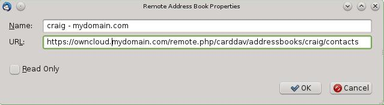

Thunderbird - Synchronize Addressbook¶
Addressbook¶
As someone who is new to ownCloud, New to SoGo Connector, and new to Thunderbird Addressbook… here is what you need in excruciating pithy detail to make this work (for all the other lost souls out there):
- Thunderbird for your OS unless it comes with your OS distribution (Linux)
- Sogo Connector (latest release)
- Lightning (a Thunderbird calendar add-on. At the time (Aug 14), syncing your contacts only works with this add-on installed.)
With an installed Thunderbird mailtool, an installed SoGo Connector, and an installed Lightning add-on:
- Thunderbird Addressbook is in the Thunderbird “Tools” Menu
- In the Thunderbird Addressbook application:
- “File > New > Remote Addressbook” (SoGo Connector added this)
- “Name:” is the name you want to give your Addressbook in the Thunderbird addressbook bar area
- “URL:” is found in your ownCloud Contacts area, that little Gear symbol
in the -bottom left- of the Contacts View (same symbol as found in the -top right- in the Calendar view). Then look for a little impeller symbol
which will display the URL you need for your installation to work.
Once installed, synchronize (right click on your newly made remote address book and select “Synchronize”). You’ll see your address book populate from ownCloud! Don’t click “read only” above unless you don’t want to modify your ownCloud server addressbook, like it contains a listing of corporate contacts and is shared with lots of people, and you don’t want a new user dragging it somewhere unintended.
The rest of the details of dealing with Thunderbird addressbook are left to the reader… First thing I learned is dragging a contact to a different addressbook is a “move” operation. If you are worried about losing the contact, save it to a VCF file using ownCloud (Or LDIF using Thunderbird Addressbook) first! Like dragging from “ownCloud Addressbook” to “Personal Address Book” removes the contact from ownCloud Server (deleting it from all the other synchronized installations) and puts it in your Local Machine -only- Address Book. So be careful or you’ll have unintended consequences where you might have intended a “copy” operation.
Contact Pictures are also sync’ed!